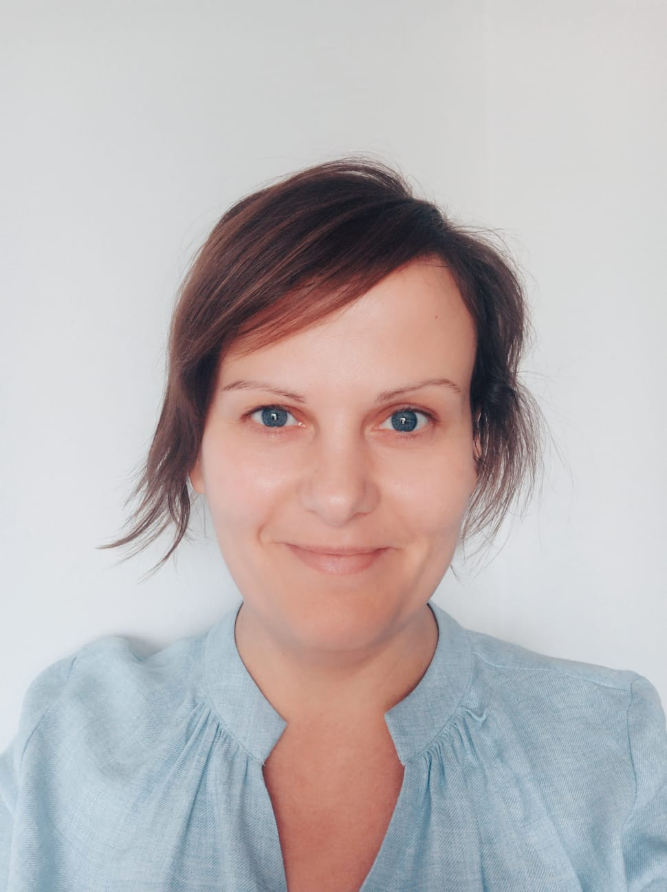

Witaj w mojej przestrzeni
Nazywam się Barbara Popa i jestem psychoterapeutką. Pomagam zrozumieć siebie i odnaleźć spokój. Zapraszam Cię na Spotkanie.

“Spokój to nie jest miejsce bez hałasu, trudności i ciężkiej pracy. To miejsce, w którym trwamy w ciszy mimo tego wszystkiego.”
– Dalajlama